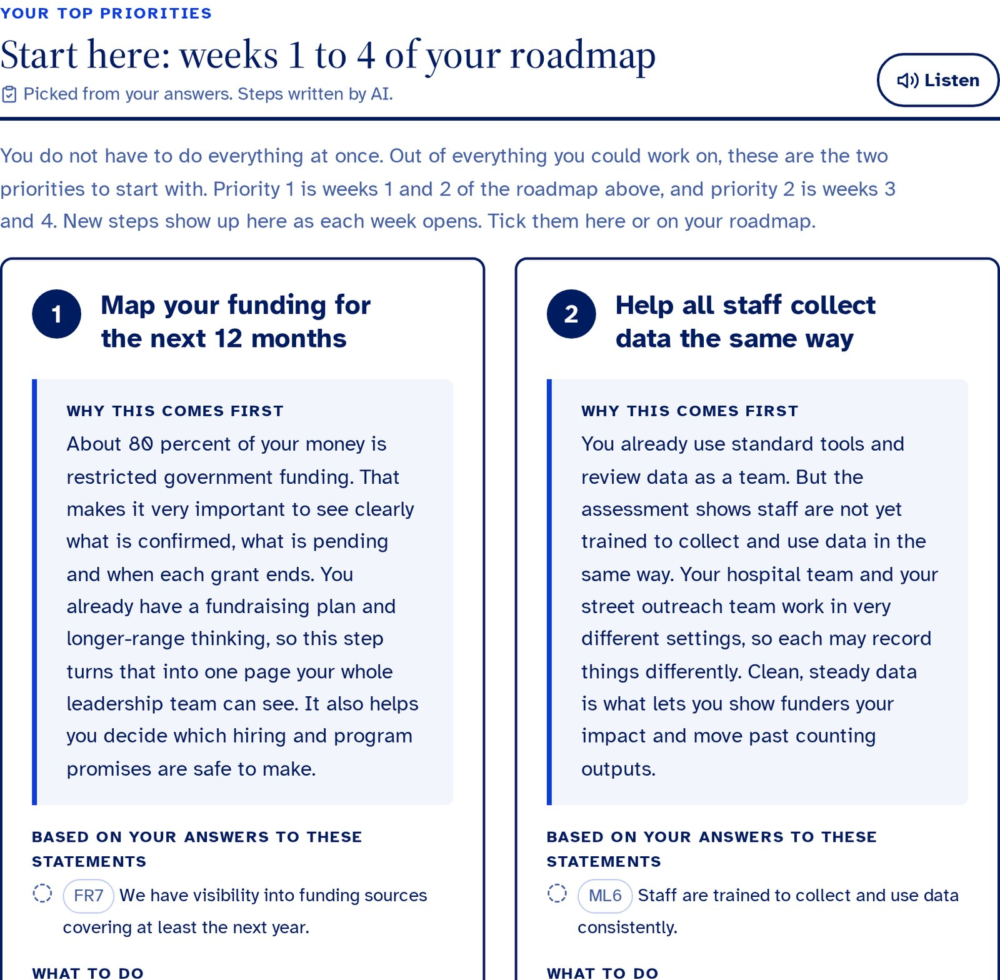
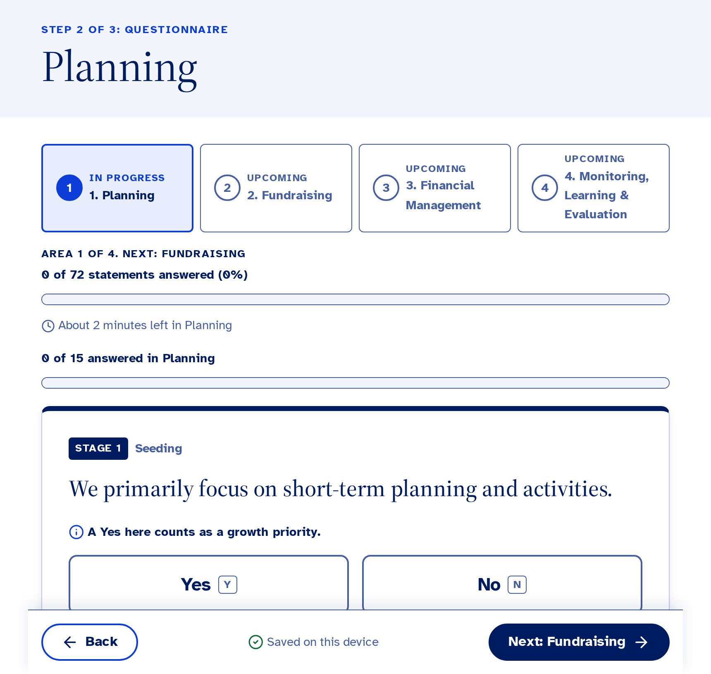
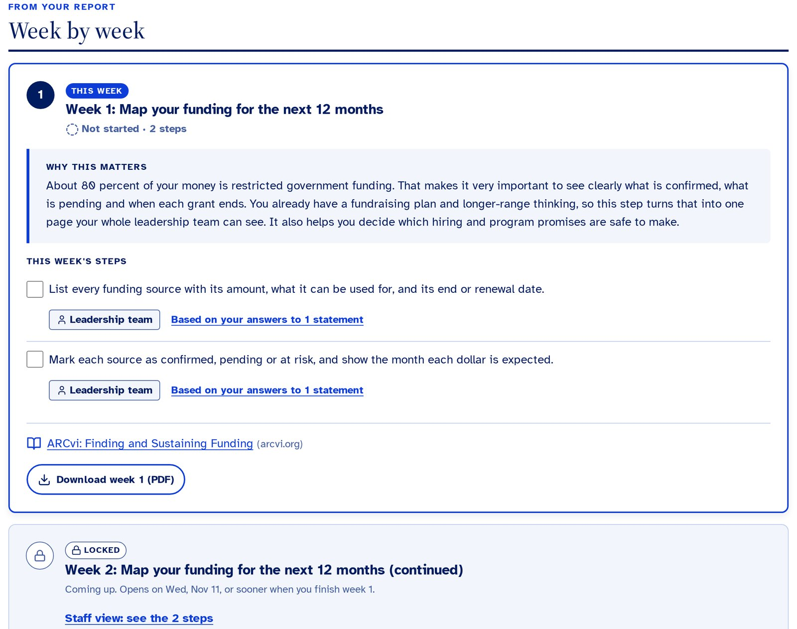
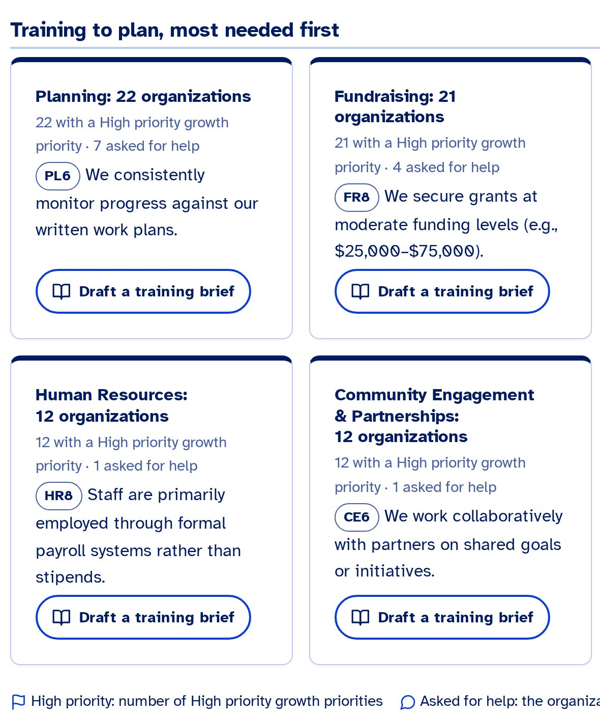
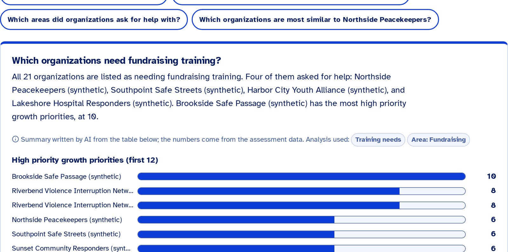
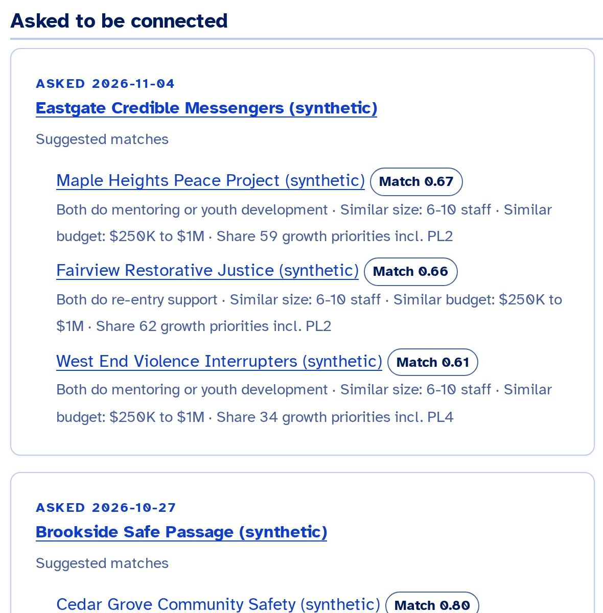
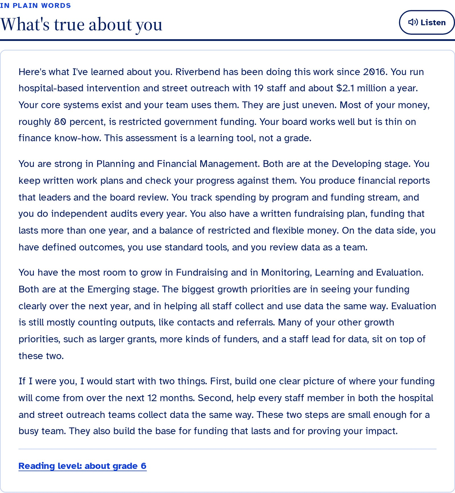

OCI Capacity Coach
Helping the groups who stop shootings in their neighborhoods grow stronger, with a clear plan they can start on Monday.
d2mi2h3eu8y69s.cloudfront.net · sign in: demo / demo · staff / staff
Team introduction
Who we are
Ariel
Shows you the live demo
Johanna
Introduces the team and the need
Bo
Walks you through what we built and how it works
Atman
Shares what it changes, and our ask
We spent three days with Everytown's Community Safety Fund team. We listened first, built second, and then watched a first-time user try it with no help, and fixed every place she got stuck.
Solution overview · the need
The people who stop shootings need strong organizations, too
45
local groups took Everytown's capacity check-up last year
2
Everytown staff wrote every one of their reports by hand
140+
groups in Everytown's network who need the same help
Who they are
Community violence intervention groups: neighbors who step in before violence happens. Most are small, 5 to 20 people, and many leaders have lived through violence or prison themselves.
Out of the 10 things you could fix, here's one or two priorities that you should do first.
Everytown Community Safety Fund team, in our interview
Solution overview · what we built
A coach for every group, in three steps
1Answer
Yes or No questions about how the group runs. About 15 minutes, in English or Spanish, on a phone or a computer.
2Get a plan
In about a minute: a letter in plain words, the two things to start with, and a chat to ask questions.
3Follow through
A 12-week plan, one week at a time, with badges along the way. In week 12, take it again and see what changed.
And for Everytown staff
One view of the whole network: which groups need which training, who asked for help, and which groups could learn from each other.
Architecture · how it works behind the scenes
Rules score. AI writes. Rules check.
- Rules
1 Answers
The leader answers on our website.
Amazon CloudFront, Amazon S3
- Rules
2 Scoring
Everytown's own scoring rules. No AI.
AWS Lambda
- AI
3 Writing
Claude writes the plan, using 9 trusted field guides.
Claude on Amazon Bedrock, Knowledge Bases
- Rules
4 Checking
Anything not tied to the group's own answers is removed.
Our code, Bedrock Guardrails
- Result
5 The plan
On screen, as a PDF, or read aloud.
Amazon Polly
The filing cabinet
Answers and plans are stored safely, and only made-up groups for now.
Amazon Aurora
The flight recorder
Every step the AI takes is recorded, so staff can check it.
Amazon CloudWatch
Ready to hand over
One script sets it all up in Everytown's own Amazon account.
AWS CloudFormation
Live demo
Let's see it with a made-up group
- 1
A group's answers, in one click. Their report starts writing while we keep going.
- 2
Their plan, in plain words. Each part says where it came from: their answers, or written by AI.
- 3
Asking the chat a question.
- 4
Their 12-week roadmap, with badges for each week done.
- 5
Everytown's view of the whole network.

Proposed industry impact
What changes, for groups, for Everytown, and for the nonprofit field
For local groups
- A plan in about a minute, not a wait for staff to write one by hand
- Written for them: plain words, read aloud, Spanish, on a phone
- Small steps a team of five can really do
For Everytown
- Staff time moves from writing reports to coaching
- Training planned around what the network really needs
- A retake in week 12 shows whether support helped
For the nonprofit field
- Free and open: any funder that supports small nonprofits can use it
- About 11 cents per report; under $50 a year for 140 groups
- Grows from 45 groups to the whole network with no rebuild
Try it with 3 to 4 grantees this quarter
- Everytown invites 3 to 4 groups to take it, about 15 minutes each.
- Staff go through each plan with the group and tell us what helped.
- Everytown's tech team sets it up in Everytown's own account, with real sign-in.
Thank you. Questions? · d2mi2h3eu8y69s.cloudfront.net
Backup · if the internet fails
What a group's leader sees

Answer. Yes or No, one question at a time, in English or Spanish.
Start here. The two things to do first, and the answers behind them.

Follow through. 12 weeks, one at a time, with badges.
Backup · if the internet fails
What Everytown staff see

Training needs. Who needs which training, and who asked for help.

Ask the data. A plain question; the numbers come straight from the data.

Peers. Groups facing the same challenges, to connect.
For questions · safety
Keeping the AI honest
Rules decide
- Every score and stage, using Everytown's own method
- Which one or two things come first
- Which links appear: only 19 trusted guides
- Every number Everytown staff see
- If someone writes about danger: 988 and 911, never the AI
The AI writes, then gets checked
- The plan, in plain words, and short chat answers
- Anything not tied to the group's answers is removed
- A safety filter screens what comes in
- Tested on 52 practice cases before every release
- Every step recorded, so staff can check it
For questions · access
Written for the reader, not the funder
Easy to read
Every plan is checked to read at about an 8th grade level or plainer.
Strengths first
A letter from a coach, never a grade.
Read aloud
Any part can be played out loud.
English and Spanish
Questions, plan and PDF.
Phone first
Every screen tested on a phone and a computer.
For every ability
Larger text, high contrast, screen readers; meets the WCAG 2.2 AA standard.

For questions · cost
Cheap enough to run for years
$0.11
of AI per report, measured on live reports
< $50
a year of AI for 140 groups, twice a year each
$1 to 3 / mo
to host when the database sleeps between uses
0
servers to look after: Amazon runs them
Today it is kept always on for judging, about $45 a month. Spending limits are built in: how many reports run at once, a cap per hour, and an optional monthly budget alert.
For questions · privacy
Built with real-world care, tested with made-up data
Data
Only made-up organizations today. Stored encrypted. People's names are never sent to the AI.
Groups stay separate
No group ever sees another group's answers. Everytown connects groups only when they ask.
Confidential PDFs
Every PDF carries an Everytown watermark and a note not to share it.
Before real groups use it
Real sign-in inside Everytown's Grantee Portal replaces today's practice logins, and Everytown sets how long records are kept.
For questions · growth
From 45 groups to the whole network, with no rebuild
100+
reports a minute that Amazon's AI service allows us today
1,000
requests at once that AWS allows; the demo is capped at 10 to control cost
Auto
the database grows and shrinks with use
2
languages today, English and Spanish
It gets more useful as it grows: every new check-up sharpens the training picture and the matches between similar groups.